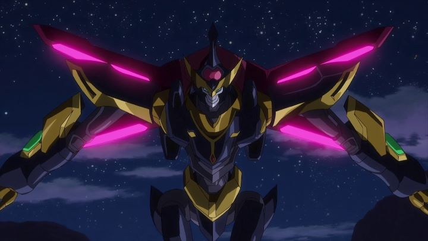

DISCLAIMER: Some minor spoilers for the film and major spoilers for the pre-existing series "Lelouch of the Rebellion" "Code Geass - Lelouch of the Rebellion" ended with its second season in 2008. To this day, fans still talk about its ending, one of the most complete endings seen in anime. At risk of spoilers, it required that Lelouch, the main character, die. So it came as a shock that a direct-sequel film called "Lelouch of the Re;surrection" was in production, to release over a decade later. Even with the original director and production team at hand, how, exactly, would they resurrect the fallen hero? Would it be worth re-writing the story and potentially ruining the franchise's legacy? The short answer is no, but my goodness, it's fun to watch them try.It's hard to talk about the movie without some spoilers (did I mention Lelouch dies at the end of the original series?). Taking place one year after the end of the second season, the world seems to be enjoying a time of peace... until a terrorist group shows up out of nowhere to kidnap princess and empress Nunnally (Lelouch's little sister) and Suzaku (dressed as Zero, Nunnally's devoted knight). As Suzaku briefly states, "And just like that, Lelouch's legacy is ruined." Meanwhile, C.C. (still "C2" in the English dub) is, sure enough, traveling with Lelouch. At least, with his body, with what appears to be a one-year-old version of his mind. She travels the world searching for a way to return Lelouch to his formal self. Both of these plot elements rely heavily on the lore surrounding the Geass power, a shifting ability that grants its user power over others in different ways. In the original series, we had C.C. and V.V. as mysterious grantors of the power, but were there others? There was a lot intentionally left vague, and "Re;surrection" capitalizes on that, both as a loophole to explain how Lelouch could return, and to explain the motivations behind the new enemy, a princess of a small Arabian country with her own Geass power, the ability to travel back in time, allowing her to watch near-term events and prepare for them in advance. There are a few concerns. Firstly, there was a trilogy of recap films for the original series, with minor but important changes to better lead into this fourth movie. It turns out those changes were completely superficial. One of the biggest changes, that student and girlfriend Shirley is alive (she died twice is alive), was meant for her to complete a minor task at the beginning, something that literally any other character could have done, or in fact, could have be done without explaination at all. "Resurrection" also decides to make other changes that conflict with both the series AND the new trilogy. Most of the characters act slightly differently, in particular, C.C. and Lelouch, and depending on your preference, you won't be happy. Characters can't make up their mind if they are living happily in Japan or in hiding on the other side of the world at any given moment. Consistency is completely out the window in this movie. If you haven't seen either the original 50 episodes or the films, "Re;surrection" will mean nothing to you. But you can easily get away with not seeing the updated films, which only succeed as a means to experience the original story in a condensed runtime.As to explaining Lelouch's return... it is good to get a little extra expansion on the lore behind Geass, and that weird alternate realm that Charles Zi Britannia was using. The series was never at its strong suit when it came to explaining this fantasy aspect. But despite providing more information than the series ever did, despite several minutes of exposition at the beginning used to explain everything, much is still left intentionally vague. A viewer will likely have more questions than answers. For the best experience, the viewer should simply "go with it" when Lelouch finally comes back in his full glory.So we're lacking consistency with the show, the explanation to why the movie exists is mediocre. "Code Geass" is known for it's tactical military battles. The fun was in seeing Lelouch pinned into a corner and able to turn things around without breaking a sweat. Is the new story / mission good in "Re;surrection?" Sort of, but it suffers from some pretty major plotholes. I can usually ignore that sort of thing, but all I could think about was waiting for some explanation to how something they did was allowed to work. No such thing occurs. The series was always good at explaining the important things, but this movie simply gives up and doesn't try. "Lelouch is alive, that's all that matters!" you can hear the creators say, as they count their money and you grit your teeth in annoyance. I couldn't help but wonder if something was lost in translation (I watched the English dub). What I got was a really dumb movie, a sequel to one of the smartest anime I've watched.  For all my complaining, I admit the movie is fun for existing fans to watch, even if just to see how terrible the plot turns out to be. That fun turns out to mean a lot to the value proposition. In addition to watching the story fall on its face, we get to see favorite characters interact again, many years since we last saw them. Lelouch is still engaging as a strategist and a leader, making chess more fun to watch than any other player in film or real life. And what of the ending of "Re;surrection," which supposedly replaces the great ending of the series? It misses an easy opportunity to explain why it is a happy ending for everyone, but whatever extra interpretation you want to add, it doesn't simply kill off Lelouch again, instead placing him in an arguably better and more satisfying state. If you like happy endings where everyone is alive, this and the recap trilogy might be preferred over the original. Funimation was quick to release an English dub in theaters, only months after the Japanese release. The dub for the series was great, and most of the core actors return for this sequel. I got chills when Lelouch properly spoke again, even if his actor's voice has changed slightly. Hearing the voices again is one of the big reasons to embrace the opportunity to see the new movie. Production-wise, "Re;surrection" feels true to the original 2006-2008 series. Which is to say the visuals and animation are still stylized, but dated in 2019. The animation is notably, but only subtlely, improved, not quite to the levels of the "Akito the Exiled" OVA, but in between that and the original series, and barely suitable for a theatrical release. Sexualized fan service, mostly taken out in the recap films for time, returns a bit for this movie, with Kallen's cleavage getting a healthy bounce and Shamma, the time-traveling villain, being purposely designed and placed to show off a bodacious figure for the camera. The mech suits shift between both 2D animation (like the original series) and 3D animation; it's a shame to not stick with one, but to see any 2D animation for this type of movement in 2019 anime is amazing. The music is good, but mostly just familiar, and the new tracks don't add much.I was worried that "Code Geass - Lelouch of the Re;surrection" would be a mess that ruins the original series. It's worse than a mess. But even a complete mess with Lelouch at the center is surprisingly fun to watch. At this time, some interviews suggest that much more is intended after this film has released, either in more movies, series, manga, novels or other. The end of "Re;surrection" makes it clear that there is a whole other aspect that can be expanded upon, that Lelouch's story may not have ended, but just begun, capable of holding out for another 50 episodes. While this transition was a bit rough, that new route can go in interesting places that might pay off dividends. By itself, we can go ahead with the theory by the writers that this is an alternate universe version, to maintain the original's legacy. If treating "Re;surrection" as fan-fiction, it can be a great time for fans.
- "Ani" More reviews can be found at : https://2danicritic.github.io/ Previous review: review_Code_Geass_-_Lelouch_of_the_Rebellion_-_Movie_Trilogy Next review: review_Coffee_Samurai_&_Hoshizora_Kiseki